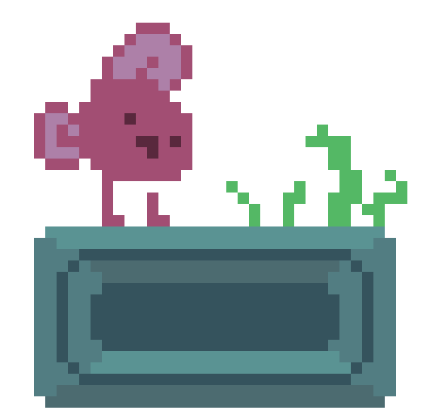

👋 Hello, i'm derpyzza
I'm a programmer and an artist. I like experimenting with low level technologies, and enjoy making little games and drawings in my off time.
This is my homepage, which acts as a blog, a link tree, as well as a portfolio of sorts
Here are some links to get you started:
Also, here's a complimentary weird fish thing, on the house. It's not a very interesting fish thing, nor a very unique one. However, how many other websites have you come across with this specific fish on the first page?
checkmate.
